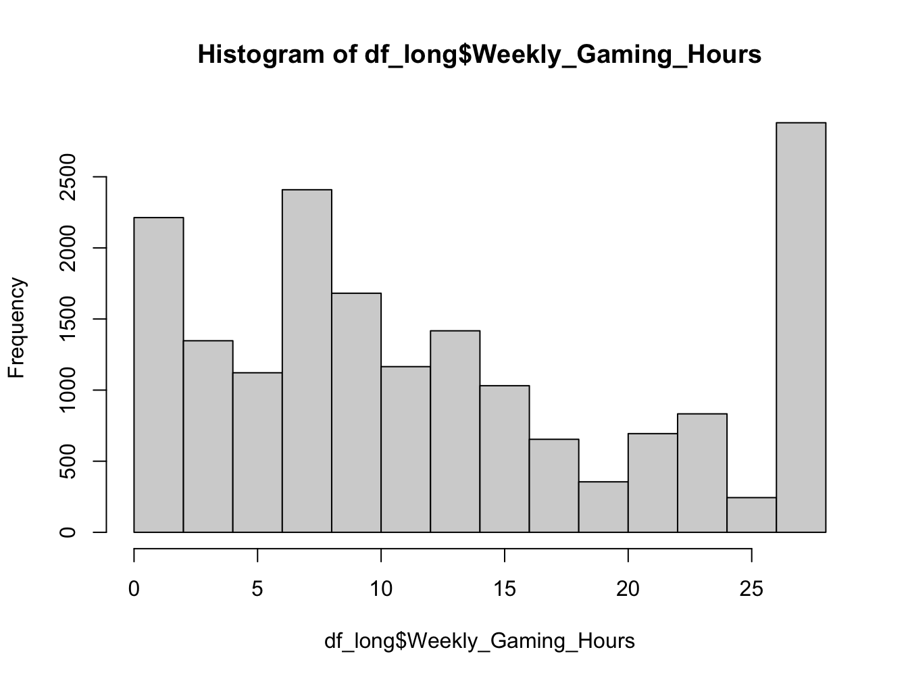
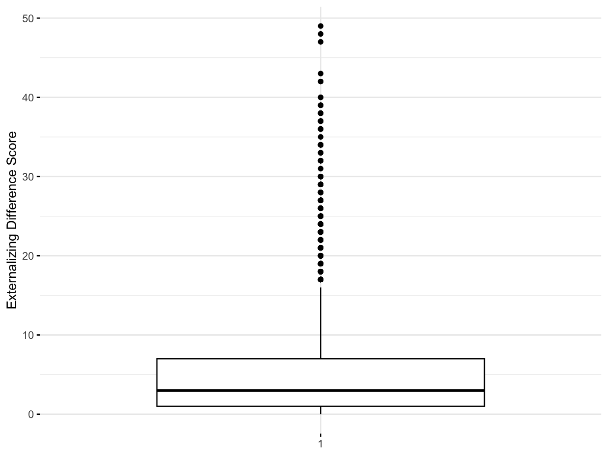
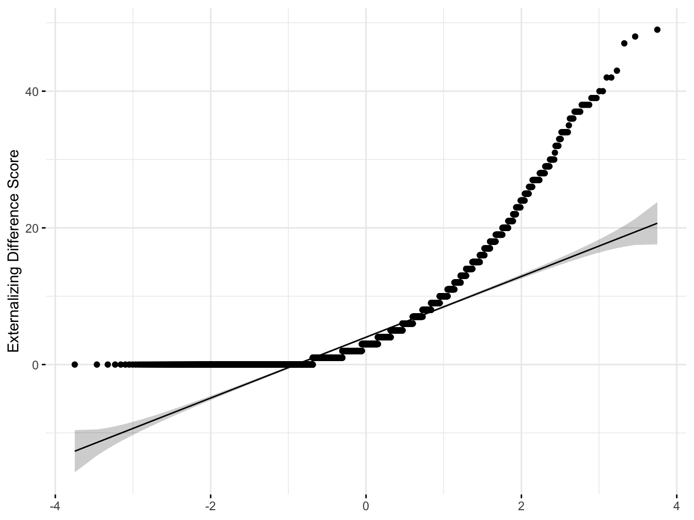

if (!("lme4" %in% installed.packages())) install.packages("lme4")
if (!("lmerTest" %in% installed.packages())) install.packages("lmerTest")
if (!("tidyverse" %in% installed.packages())) install.packages("tidyverse")
if (!("arrow" %in% installed.packages())) install.packages("arrow")
if (!("afex" %in% installed.packages())) install.packages("afex")
if (!("janitor" %in% installed.packages())) install.packages("janitor")
if (!("skimr" %in% installed.packages())) install.packages("skimr")
if (!("sdamr" %in% installed.packages())) install.packages("sdamr")
if (!("formatR" %in% installed.packages())) install.packages("formatR")
if (!("report" %in% installed.packages())) install.packages("report")
if (!("easystats" %in% installed.packages())) install.packages("easystats")
if (!("emmeans" %in% installed.packages())) install.packages("emmeans")
if (!("poorman" %in% installed.packages())) install.packages("poorman")
if (!("parameters" %in% installed.packages())) install.packages("parameters")
if (!("modelbased" %in% installed.packages())) install.packages("modelbased")
if (!("DT" %in% installed.packages())) install.packages("DT")
if (!("data.table" %in% installed.packages())) install.packages("data.table")
if (!("arsenal" %in% installed.packages())) install.packages("arsenal")
if (!("kableExtra" %in% installed.packages())) install.packages("kableExtra")
if (!("equatiomatic" %in% installed.packages())) install.packages("equatiomatic")
if (!("gtsummary" %in% installed.packages())) install.packages("gtsummary")
if (!("ggpubr" %in% installed.packages())) install.packages("ggpubr")
if (!("rstatix" %in% installed.packages())) install.packages("rstatix")
if (!("datarium" %in% installed.packages())) install.packages("datarium")
if (!("car" %in% installed.packages())) install.packages("car")
if (!("ez" %in% installed.packages())) install.packages("ez")Difference Scores: Example 1
Paired Samples t-test
The paired samples t-test can be used to determine whether the difference between a pair of values obtained on a continuous outcome produced by the same individual across two measurement occasions (e.g., pre/post-test design), differs significantly from 0 Specifically, a raw difference score is computed as an index of change in relation to some continuous outcome by subtracting the variable’s value obtained at a prior measurement occasion from the value of the same variable obtained at a subsequent occasion. This difference value is then used in a one sample t-test to determine whether the average difference score differs significantly from 0 (i.e., was the amount of change [average difference score] significantly different than zero).
[The paired samples t-test is a special case of the one-sample t-test, with the exception that this model needs to be modified to account for the statistical dependence among repeated observations obtained on the same subject, other than the issue of non-independence, the underlying assumptions for the paired samples t-test is exactly the same as for the independent samples t-test.]
In this example, we will use the paired samples t-test to analyze scores on the externalizing subscale of the child behavior checklist (CBCL) obtained across two measurement occasions in a sample of youth taking part in the ABCD Study. Our primary aim is to determine whether there is evidence of change in CBCL externalizing scores from T1 to T2, while accounting for observations that are clustered within youth over time.
We want to know, if the average externalizing scores of the participants changes across measurement occasions xxxxx….
Preliminary Setup
This code installs the r packages necessary for this example, if they are not already installed
This code loads the r libraries necessary for this example
library(lme4)
library(lmerTest)
library(tidyverse)
library(arrow)
library(afex)
library(janitor)
library(skimr)
library(sdamr)
library(formatR)
library(report)
library(easystats)
library(emmeans)
library(poorman)
library(parameters)
library(modelbased)
library(DT)
library(data.table)
library(arsenal)
library(kableExtra)
library(equatiomatic)
library(gtsummary)
library(ggpubr)
library(rstatix)
library(datarium)
library(car)
library(ez)This code configures knitr code chunk options
knitr::opts_chunk$set(echo = T, message=F, warning=F, error=F,
comment=NA, cache=T, code_folding=T,
R.options=list(width=220), fig.align='center',
out.width='75%', fig.asp=.75)Descriptives Overview
This code reads in and shows the data to be used in the current example
## Read data
df_long<- read_csv("/Users/shawes/Desktop/df_long.csv")
df_long_sub<- read_csv("/Users/shawes/Desktop/df_long_sub.csv")
df_wide <- read_csv("/Users/shawes/Desktop/df_wide.csv")## Create a viewable 'datatable' of the primary dataframe (df)
datatable(head(df_long, 50, rownames = FALSE),extensions = 'AutoFill','ColReorder', options = list(autoFill = TRUE,colReorder = TRUE,
columnDefs = list(list(className = 'dt-center', targets = 10)),
order = list(list(3, 'asc'), list(4, 'desc')),
pageLength = 10,
lengthMenu = c(10, 15, 20),
initComplete = JS(
"function(settings, json) {",
"$(this.api().table().header()).css({'background-color': '#808080', 'color': '#fff'});",
"}")
))This code provides descriptive information for continuous outcomes
## Create a descriptives table of study variables by measurement occasion
descriptives_1 <- tableby.control(test=FALSE, total=FALSE,
numeric.test="kwt", cat.test="chisq",
numeric.stats=c("N", "meansd", "median", "range"
), #"Nmiss2"
cat.stats=c("countpct"), #"Nmiss2"
stats.labels=list(N='Count', meansd="Mean (SD)", median
='Median', range='Min - Max'
)) #, Nmiss2 ='Missing'
my_cont_labels <- list(
Age = "Age",
Weekly_Gaming_Hours = "Weekly # of Video Gaming Hrs",
Externalizing = "CBCL Externalizing Scale"
)
tab_descriptives_1 <- tableby(Event ~ Age + Weekly_Gaming_Hours +
Externalizing,
data=df_long, control=descriptives_1)
#summary(tab_descriptives_1, labelTranslations = my_cont_labels , text=TRUE, title = #"Continuous Outcomes", term.name = TRUE)
# Push table object through kable and kable_styling
tab_descriptives_1 %>%
summary(text=TRUE, digits.pct=1, digits=1) %>%
kable(caption = "Continuous Outcomes") %>%
kable_styling(bootstrap_options = "striped", full_width = FALSE, html_font = "Cambria",
font_size = 15,
position = "center", fixed_thead = T) %>%
row_spec(2:3, bold = F, extra_css = 'vertical-align: middle !important;') %>%
column_spec(1, width = "20em", background = "light grey", bold = T, border_right = T) %>%
column_spec(2, width = "20em", border_right = T) %>%
column_spec(3, width = "20em", border_right = T) %>%
footnote(general = "Here is a general comments of the table. ") %>%
scroll_box(width = "75%", height = "500px")| Baseline (N=6513) | Year_1 (N=6258) | Year_2 (N=5745) | |
|---|---|---|---|
| Age | |||
| - Count | 6507 | 0 | 0 |
| - Mean (SD) | 9.5 (0.5) | NA | NA |
| - Median | 9.0 | NA | NA |
| - Min - Max | 8.0 - 11.0 | NA | NA |
| Weekly_Gaming_Hours | |||
| - Count | 6427 | 6207 | 5411 |
| - Mean (SD) | 11.3 (8.3) | 13.3 (8.3) | 14.3 (10.6) |
| - Median | 9.0 | 11.0 | 14.0 |
| - Min - Max | 0.0 - 28.0 | 0.0 - 28.0 | 0.0 - 28.0 |
| Externalizing | |||
| - Count | 6510 | 6246 | 4444 |
| - Mean (SD) | 5.1 (6.5) | 4.8 (6.2) | 4.4 (6.1) |
| - Median | 3.0 | 3.0 | 2.0 |
| - Min - Max | 0.0 - 49.0 | 0.0 - 47.0 | 0.0 - 50.0 |
| Note: | |||
| Here is a general comments of the table. |
This code provide descriptive information for categorical outcomes
## Create a descriptives table of study variables by measurement occasion
descriptives_2 <- tableby.control(test=FALSE, total=FALSE,
numeric.test="kwt", cat.test="chisq",
numeric.stats=c("N", "meansd", "median", "range"
), # "Nmiss2"
cat.stats=c("countpct"), # "Nmiss2"
stats.labels=list(N='Count', meansd="Mean (SD)", median
='Median', range='Min - Max'
)) # , Nmiss2 ='Missing'
my_cat_labels <- list(
Event = "Year",
Sex = "Sex",
MatureVideoGames = "Mature Video Games",
DBD = "DBD"
)
tab_descriptives_2 <- tableby(Event ~ Sex + MatureVideoGames + DBD,
data=df_long, control=descriptives_2)
#summary(tab_descriptives_2, labelTranslations = my_cat_labels , text=TRUE, title = #"Categorical Outcomes", term.name = TRUE)
# Push table object through kable and kable_styling
tab_descriptives_2 %>%
summary(text=TRUE, digits.pct=1, digits=1) %>%
kable(caption = "Categorical Outcomes") %>%
kable_styling(bootstrap_options = "striped", full_width = FALSE, font_size = 15,
position = "center", fixed_thead = T) %>%
row_spec(2:3, bold = F, extra_css = 'vertical-align: middle !important;') %>%
column_spec(1, width = "20em", background = "light grey", bold = T, border_right = T) %>%
column_spec(2, width = "20em", border_right = T) %>%
#column_spec(3, width = "20em", border_right = T) %>%
footnote(general = "Here is a general comments of the table. ") %>%
scroll_box(width = "75%", height = "500px")| Baseline (N=6513) | Year_1 (N=6258) | Year_2 (N=5745) | |
|---|---|---|---|
| Sex | |||
| - Female | 2132 (32.7%) | 2048 (32.7%) | 1872 (32.6%) |
| - Male | 4381 (67.3%) | 4210 (67.3%) | 3873 (67.4%) |
| MatureVideoGames | |||
| - Count | 6506 | 6250 | 5724 |
| - Mean (SD) | 1.2 (0.4) | 1.2 (0.4) | 1.2 (0.4) |
| - Median | 1.0 | 1.0 | 1.0 |
| - Min - Max | 1.0 - 2.0 | 1.0 - 2.0 | 1.0 - 2.0 |
| DBD | |||
| - no | 5207 (80.5%) | 4861 (78.7%) | 3639 (79.8%) |
| - yes | 1258 (19.5%) | 1319 (21.3%) | 922 (20.2%) |
| Note: | |||
| Here is a general comments of the table. |
Diagnostics
hist(df_long$Weekly_Gaming_Hours)
## Summary statistics
summary<-df_long %>%
group_by(Event) %>%
get_summary_stats(Externalizing, type = "mean_sd")
data.frame(summary) Event variable n mean sd
1 Baseline Externalizing 6510 5.106 6.464
2 Year_1 Externalizing 6246 4.780 6.227
3 Year_2 Externalizing 4444 4.443 6.054# Outlier detection
#outlier<-df_long %>%
#group_by(Event) %>%
#identify_outliers(Externalizing)
#data.frame(outlier)
# Normality Checking
#normality<-df_long_sub %>%
#group_by(Event) %>%
#shapiro_test(df_long_sub$Externalizing[0:5000])
#data.frame(normality)Results
The code snippet below tells R to compute a difference score by subtracting each participant’s Externalizing score at T2 from their Externalizing score at T1. Next, a one-sample t-test is computed to examine whether change as represented by the difference score is different than zero (indicating evidence of change in the construct over time).
The t.test function is provided by base R. and it accepts three arguments in the above code: 1) the DV (Externalizing); 2) mu = 0 (specify theoretical mean); alternative = “two.sided” (test of alternative hypothesis);
# (!!! replace "Externalizing_T0")
# Compute difference score based on CBCL Externalizing subscale scores at baseline (t1) and 1-Year Follow-up (t2)
df_wide$diffscore <- df_wide$Externalizing_T1 - df_wide$Externalizing_T0
# One-sample t-test to determine whether the average difference score is significantly different than 0.
result <- t.test(df_wide$Externalizing_T0, mu = 0, alternative = "two.sided")
# Print the results
result
One Sample t-test
data: df_wide$Externalizing_T0
t = 59.144, df = 5647, p-value < 2.2e-16
alternative hypothesis: true mean is not equal to 0
95 percent confidence interval:
4.844541 5.176705
sample estimates:
mean of x
5.010623 The output from our model shows xxxxxx.
# Compute statistical summaries for the difference score variable
summary(df_wide$diffscore) Min. 1st Qu. Median Mean 3rd Qu. Max. NA's
-36.0000 -2.0000 0.0000 -0.2574 1.0000 38.0000 12 # Scatterplot to visualize relationship between t1 & t2 data used to create difference score
scatterplot <- ggplot(df_wide, aes(x = Externalizing_T0, y = Externalizing_T1)) +
geom_point(size = 3) +
geom_smooth(method = lm, se = F) +
xlab("CBCL Externalizing (x) Baseline") +
ylab("CBCL Externalizing (x) 1-Year Follow-up")
suppressWarnings(print(scatterplot))### boxplot
diffscore_boxplot <- ggboxplot(df_wide$Externalizing_T0,
ylab = "Externalizing Difference Score", xlab = FALSE,
ggtheme = theme_minimal()
)
suppressWarnings(print(diffscore_boxplot))
### Shapiro-Wilk test and normality (Q-Q) plot (visualization of correlation between a given sample and the normal distribution)
shapiro.test(df_wide$Externalizing_T0[0:5000])
Shapiro-Wilk normality test
data: df_wide$Externalizing_T0[0:5000]
W = 0.76155, p-value < 2.2e-16qqplot <- ggqqplot(df_wide$Externalizing_T0,
ylab = "Externalizing Difference Score", xlab = FALSE,
ggtheme = theme_minimal()
)
suppressWarnings(print(qqplot)) 
## Output and reports extending from one-sample t-test difference score
#summary(xxxx)
#confint(xxxxx, level = 0.95, #method = "Wald")
#report(xxxxx)
#report_performance(xxxxxx)
#report_statistics(xxxxx)
#random <- estimate_grouplevel(xxxx)This output shows xxxxxxxx. Briefly walk through each metric
Text
# safsafdThe estimated correlation between x and y was “r cor(x,y). There are "r nrow(my_data) individuals.
From the fixed effects section of the model summary, we can conclude that there is strong evidence that RT increased significantly over time (i.e., # of years). On average for each additional year, RT increased by 10.46 (b = 10.46, SE = 0.80, p < .001).We are 95% confident that the average increase was between 8.89 and 12.04.
In the above, we estimate that the average intercept across all participants is 251.4. Results from the random effects section below show that the variance of the intercept for Subject is 1378.2. Taking the square root, the standard deviation of the intercept is thus 37.1.
We can calculate the 95% coverage interval as 251.4 ± 1.96*37.1. The lower bound of the 95% coverage interval is thus 178.7 and the upper bound is 324.1. We therefore estimated that 95% of the participants have an intercept between 178.7 and 324.1. This means that 95% of the participants have a reaction time between 178.7 and 324.1 at Day 0. This is not to be confused with the 95% confidence interval of the intercept. The 95% confidence interval is (232.3, 270.5), and this indicates that we are 95% confident that the average intercept is somewhere between 232.3 and 270.5.
In this model, we have accounted for the repeated measures design (observations nested within individuals) by including a random intercept for each participants. Each individual has his/her own intercept. The effect of time(Year) on RT is assumed to be the same across individuals. This assumption can be relaxed by fitting a random slope model.
## sfsfafsacA random slope model is used to test if sleep deprivation affects reaction time. To account for the repeated measures design, a random intercept was specified for participants. The random slope for days of sleep deprivation was included in the model to allow the effect of sleep deprivation to vary across participants. Results are shown in Table 1. Using a significant level of 0.05, results indicate that sleep deprivation significantly increased reaction time. On average, each additional day of sleep deprivation increased reaction time by 10.47ms (b = 10.47, 95% CI = [7.44, 13.50], p < .001). Model fit comparison between model with and without random slope for sleep deprivation shows that the effect of sleep deprivation varied across participants, χ2(2)= 42.14, p < .001. The 95% coverage interval for the random slope of sleep deprivation is (-1.14, 22.07), indicating that the effect of sleep deprivation was between -1.14 and 22.07 for 95% of the participants.